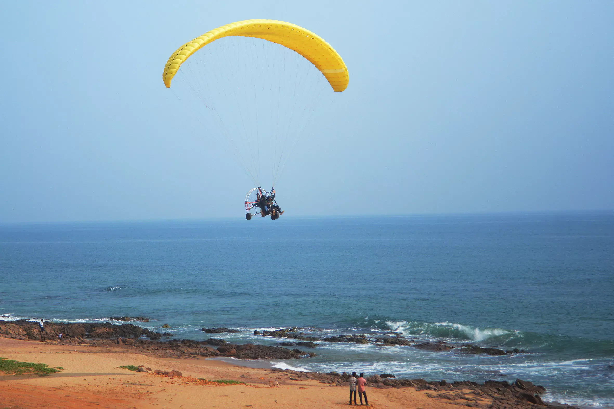
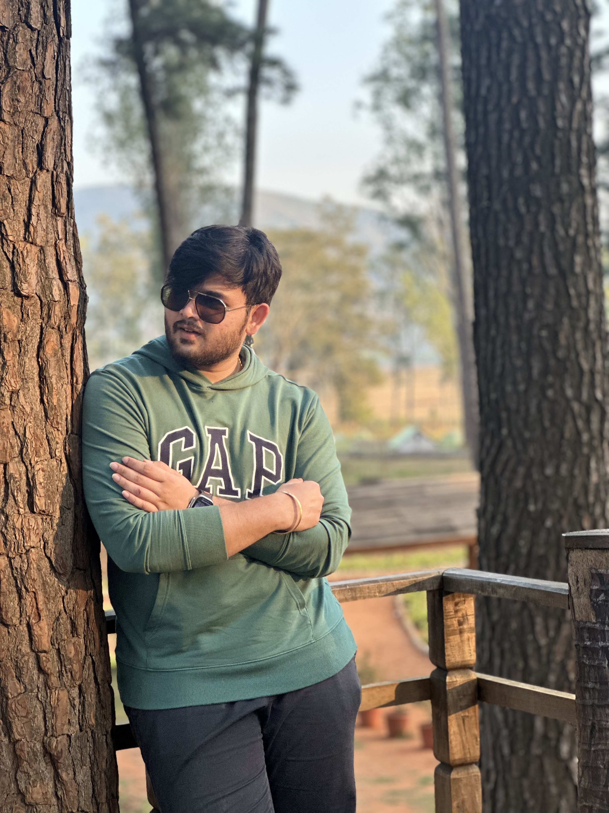

Visakhapatnam (Vizag)
Visakhapatnam (Vizag) is a stunning coastal city in Andhra Pradesh, nestled between the Eastern Ghats and the Bay of Bengal.
Top Three activities to do in Visakhapatnam

Water Sports at Rushikonda Beach
Try surfing, jet-skiing, and parasailing at Vizag's most thrilling beach destination.

Kailasagiri Hill Park
Ride the ropeway up for stunning panoramic views of the city and the Bay of Bengal.

Trekking in Araku Valley
Trek through lush green hills, coffee plantations, and tribal villages just a scenic train ride away from Vizag.

Your Guide
Hello My actual name is "Venkumahanthi Bhanu Shankara Siddhardha , I will be your guide to explore the city of destiny Vizag"